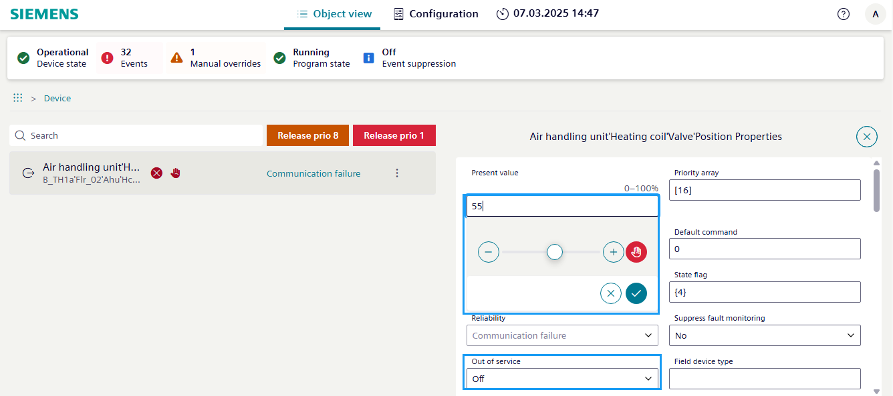

Overriding and releasing output object (valve damaged)
Determine the specific BACnet object that represents the output you want to set to manual mode, such as an analog output, binary output or multistate output. Log into the Web interface of the BACnet device that contains the output you want to set to manual mode.
Set to manual mode
- Go to the Object view tab.
- Select Application.
- Select [Plant name] > [Object name].
Note: The broken data point can be located on different hierarchy levels and is marked with and a fault messageCommunication failure. - Select .
- The Position properties dialog area opens.
- In the Present value text field, select .
- The manual indication on the input dialog changes to .
- In the Present value text field, enter an appropriate value, for example, heating valve = 50 %.
- Select to send the command.
- The Manual symbol appears in the object list.
- The number of manual overrides
 changes in the status bar.
changes in the status bar.

Checking the valve
- Identify the valve.
- Locate the specific valve that is out of order in the system or equipment.
- Determine the type of valve (for example, ball valve, globe valve, butterfly valve) and its function within the system.
- Isolate the valve.
- Shut off the power or energy supply to the valve, if applicable.
- Isolate the valve from the rest of the system by closing upstream and downstream isolation valves, if available.
- Depressurize the line or system around the valve to ensure safe access.
- Inspect the valve:
- Visually inspect the valve for any physical damage, such as cracks, corrosion, or leaks.
- Check the actuator of the valve, if it has one, for proper functioning.
- Examine the seals, packing, and other components of the valve for wear or deterioration.
- Troubleshoot the issue.
- Determine the root cause of the malfunction of the valve, such as a mechanical failure, electrical issue, or control problem.
- Refer to the manufacturer's documentation or consult with a technician to identify the specific problem.
- Repair or replace the valve.
- If the valve can be repaired, replace any worn or damaged components, such as seals, packing, or actuator parts.
- If the valve is beyond repair, you will need to replace it with a new, compatible valve.
- Reinstall the valve.
- Carefully reinstall the repaired or replacement valve, ensuring proper alignment and connections.
- Reconnect any electrical or control components, and ensure they are properly configured.
- Restore the system.
- Reopen the upstream and downstream isolation valves, if applicable.
- Gradually restore the system pressure and flow to the valve.
- Check for any leaks or other issues during the restoration process.
- Test the valve.
- Operate the valve through its full range of motion to ensure proper functionality.
- Verify that the valve is responding correctly to any control signals or actuator commands.
- Perform any necessary calibration or adjustments to ensure the valve is working as intended.
- Document the repair.
- Document the steps taken to identify and fix the valve issue.
- Record the valve model, serial number, and any other relevant information.
- Keep the documentation for future reference and maintenance purposes.
- Final work in the Web interface.
- Once the valve has been replaced and tested, release the value.
- Load the current parameters back into ABT Site.